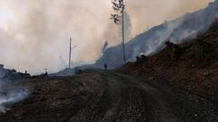
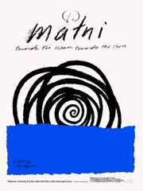
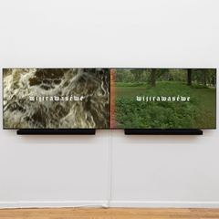

Sky Hopinka
Member of the Ho-Chunk Nation of Wisconsin; Descendant of the Pechanga Band of Luiseño Indians · United States
Land references on the atlas: Hoocąk, Payómkawichum (Luiseño)
Films 24
Kunįkaga Remembers Red Banks, Kunįkaga Remembers the Welcome Song 2014
Director
I'll Remember You as You Were, not as What You'll Become 2016
Director


Anti-Objects, or Space Without Path or Boundary 2017
Director · Short · Short


Fainting Spells 2018
Crew · Camera, sound, edit · Experimental · Short


Here you are before the trees 2020
Director
Watch · skyhopinka.com ↗Credit source · skyhopinka.com ↗On the map

maɬni – towards the ocean, towards the shore 2020
Director · Experimental · Feature

Just a Soul Responding 2021
Director
Watch · skyhopinka.com ↗Credit source · skyhopinka.com ↗On the map
Kicking the Clouds 2021
Crew · Camera, sound, edit · Experimental · Short

Mnemonics of Shape and Reason 2021
Director · Experimental · Short


Powwow People 2026
Director · Documentary · Feature
Watch · skyhopinka.com ↗Credit source · imaginenative.org ↗On the map
Sources
- macfound.org ↗ · Institution / festival profile
- imaginenative.org ↗ · I26
- skyhopinka.com ↗
Cite this page
MLA
“Sky Hopinka.” Indigenous Cinema Atlas: Abya Yala and Turtle Island, created by John Kennedy Godoy, University of Colorado Boulder, 2026, https://jwilliamkennedy.github.io/abya-yala-film-atlas/beta/maker/DIR-0307.html. Accessed .
Chicago
Godoy, John Kennedy. “Sky Hopinka.” Indigenous Cinema Atlas: Abya Yala and Turtle Island. University of Colorado Boulder, 2026. https://jwilliamkennedy.github.io/abya-yala-film-atlas/beta/maker/DIR-0307.html.
Identity is recorded only from the filmmaker’s own words or an explicit biographical source; it is never inferred from a film’s subject, language or setting. Images remain with their rights holders.